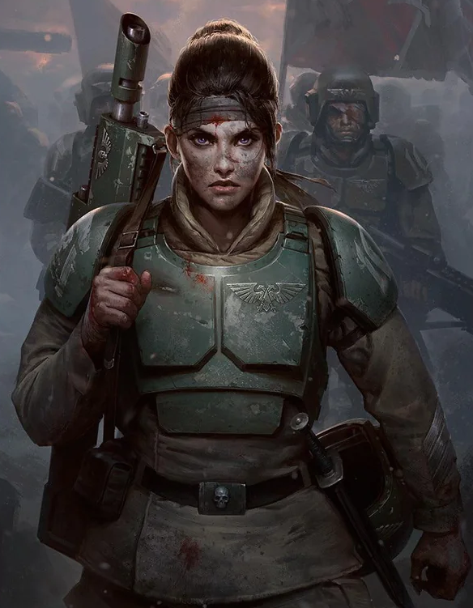

Dossier Régimentaire Cadia 500.M41
Les Cadians furent les soldats d’un monde-forteresse. Une planète dressée face à l’Œil de la Terreur, condamnée à veiller sur la plaie ouverte du Chaos.
Sur Cadia, l’enfance était courte. La guerre commençait tôt. Chaque citoyen apprenait à tenir une arme avant même de comprendre pleinement pourquoi il devrait un jour mourir avec.

RÔLE SUR LE CHAMP DE BATAILLE
Les régiments cadians devinrent l’exemple même de la discipline impériale. Formation stricte, chaînes de commandement solides, résistance morale élevée. Ils étaient entraînés non pour espérer survivre, mais pour tenir assez longtemps.
Leur doctrine repose sur la ligne de bataille, la coordination, le feu concentré et la discipline sous pression. Là où d’autres régiments se brisent, les Cadians resserrent les rangs.
La chute de Cadia ne détruisit pas leur héritage. Elle le grava dans le sang.
Lorsque la planète fut brisée, les survivants continuèrent de combattre. Cadia tomba, mais les Cadians ne plièrent pas.
DOGME ET DISCIPLINE
Depuis, leurs régiments dispersés portent la mémoire d’un monde mort. Chaque bataille est une revanche. Chaque position tenue est une pierre invisible ajoutée aux ruines de leur planète.
Il faut comprendre ceci. Les Cadians ne défendent pas seulement l’Imperium.
Ils défendent la preuve qu’un monde peut être détruit sans que son devoir disparaisse.
Fin de l’extrait. Toute unité cadienne doit être considérée comme force de ligne fiable, particulièrement adaptée aux engagements défensifs prolongés.